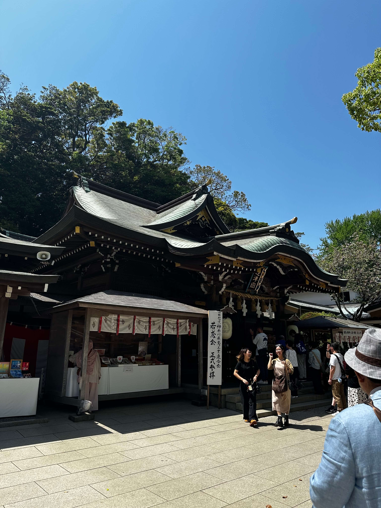
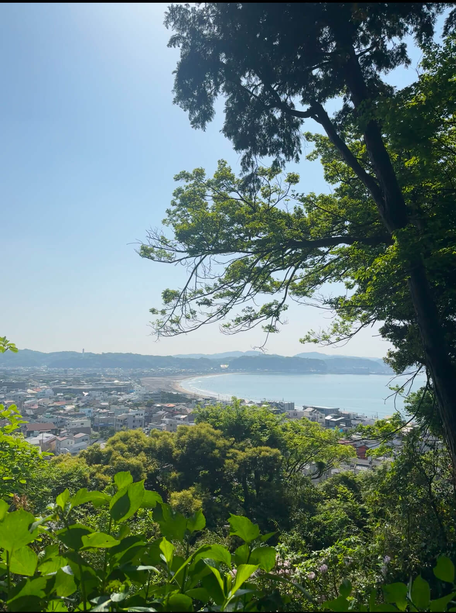
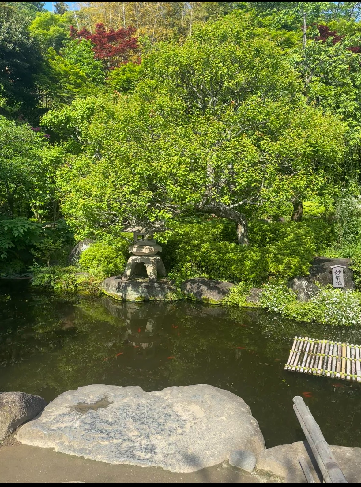

Hasedara Temple
Kamakura's hidden gem

Introduction
Hasedera's origins are deeply rooted in Japan's early Buddhist history, dating back to the year 736 according to temple records

Magnificient Coastal View
Perched on a hillside, Hasedera offers stunning panoramic views of Yuigahama Beach and Sagami Bay. The observation deck provides an ideal spot to capture the beauty of Kamakura's coastline and its picturesque surroundings.
The Eleven-Headed Kannon
Discover the magnificent 9.18m tall wooden statue of the Eleven-Headed Kannon, a profound representation of compassion. It is one of Japan's largest wooden sculptures, inspiring awe with its intricate details and serene presence.

Seasonal Beauty & Gardens
The temple grounds are renowned for their seasonal beauty. From the vibrant hydrangeas in early summer to the fiery maple leaves in autumn, Hasedera's meticulously kept gardens provide a tranquil and picturesque setting year-round